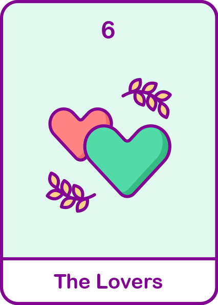

교황
남을 이해하고 낙천적이며 인간관계를 중요시 여기는 사람입니다.
사람들과 조화를 이루고 친밀한 관계를 유지해요.

#이해심
#낙천적
#사랑
현대해상
내 성격 타로카드 해석은?
정방향 해석
- 내 사람과 내 사람이 친해지는 걸 좋아하는 징검다리 역할을 많이 하고 사람들과 조화를 이뤄요.
- 많은 사람들에게 신뢰를 받으며, 눈치가 빨라 상대가 무엇이 필요한지 알아차려요.
- 배려심이 깊고 매력적이며 사람들에게 잘보이기 위해 본인을 잘 가꿔요.
- 낙천적이고 밝으며 감수성이 풍부해요.
역방향 해석
- 사람들을 워낙 좋아하다보니 다른 사람의 말에 쉽게 넘어가는 경향이 있어요.
- 감수성이 풍부하다보니 상태가 좋지 않으면 급 다운 되어 짜증을 내고 후회해요.
- 남들에게 잘해주려다보니 그만큼 상처도 받고 가끔은 혼자만의 시간이 필요해요.
- 갈등상황을 꺼려하고 나에게 비판적으로 말하는 것을 싫어해요.
재미로 보는
내 타로카드의 재물운은?
재물운은 원활하게 꾸준히 들어오고 있는 흐름입니다! 내가 하는 협상이 다 잘 진행되고,
필요한 타이밍에 맞춰서 큰돈은 아니지만 행복함을 느낄 수 있어요.
하지만 가끔 나에게 오는 지름신, 금전운은 계혹 들어오지만 유흥으로 소비될 수 있어요!
그리고 누군가에게 돈을 빌리거나 빌려주기에도 나쁜 시기니 조심하세요!
금전운이 좋지만 세어나가는 상황이 많이 있을 수 있으니 합리적인 돈 관리를 시작해봐요!
하지만 가끔 나에게 오는 지름신, 금전운은 계혹 들어오지만 유흥으로 소비될 수 있어요!
그리고 누군가에게 돈을 빌리거나 빌려주기에도 나쁜 시기니 조심하세요!
금전운이 좋지만 세어나가는 상황이 많이 있을 수 있으니 합리적인 돈 관리를 시작해봐요!
보험 컨디션도 체크해보기! 가입한 보험을 확인하고
부족한 부분을 채워 보세요 현대해상